Contents
Lab 3: ECG
ELEC3802
clc clear clf
Load data
load('ECG_noisy.mat');
A. Examine the frequency spectrum and design filters for ECG
%Examine the DC off-set figure(1) % Pick ECG1_noisy periodogram(ECG1_noisy); % Q3 There is DC offset as the value is not ZERO at frequency of 0Hz title('Noisy ECG1'); saveas(gcf,'ECG1_noisy','png'); % Raw signal N=length(ECG1_noisy); t=[0:N-1]/Fs; figure(); plot(t(1:500),ECG1_noisy(1:500)); title('ECG1 Raw Signal'); xlabel('Time (s)'); ylabel('Intensity'); saveas(gcf,'ECG1_noisy_Raw','png'); NF=2^16; [Pxx,W]=periodogram(ECG1_noisy,[],NF); %converting to Hz fp=Fs*W/(2*pi); % CHECK FOR DC OFFSET AND POWER LINE PICK UP figure(); plot(fp,Pxx,'-'); title('Periodogram PSD of ECG1'); xlabel('Frequency (Hz)'); ylabel('Intensity'); saveas(gcf,'ECG1_noisy_periodogram','png'); % Q4. Yes, there are spikes in the signal at normalised freq = 0.4 (50Hz)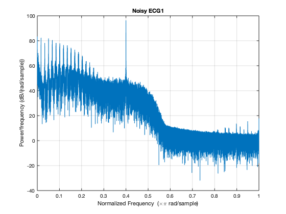 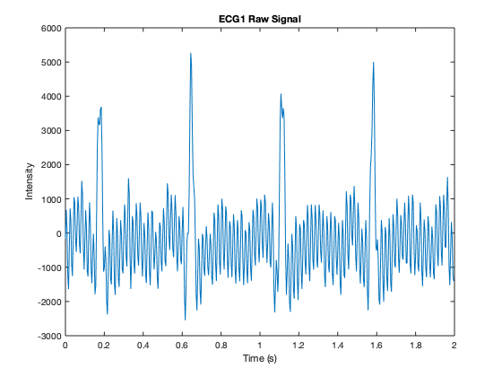 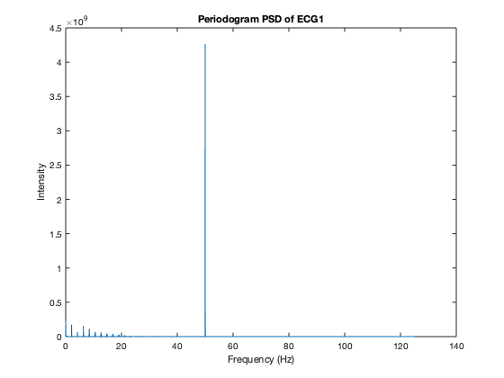
Q5 Low order filter
fc = 0.2; Wn = fc/(Fs/2); % 1st order [b,a] = butter(1,Wn,'high'); % Check the frequency response of the filter. figure(); freqz(b,a); title('Frequency Response'); saveas(gcf,'frequencyResponse_1','png'); % Visualize filter ECG1_low_filtered = filter(b,a,ECG1_noisy); figure(); % periodogram(ECG1_low_filtered); [Pxx,W]=periodogram(ECG1_low_filtered,[],NF); fp=Fs*W/(2*pi); figure(); plot(fp,Pxx,'-'); title('Periodogram PSD of ECG1 after High Pass Filter'); xlabel('Frequency (Hz)'); ylabel('Intensity'); saveas(gcf,'Periodogram_PSD_ECG1_High_Pass_Filter','png'); figure(); freqz(ECG1_low_filtered); title('Frequency Response'); saveas(gcf,'High_Pass_Filtered_frequencyResponse_1','png');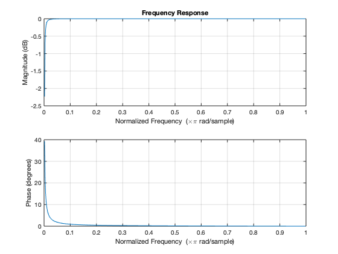 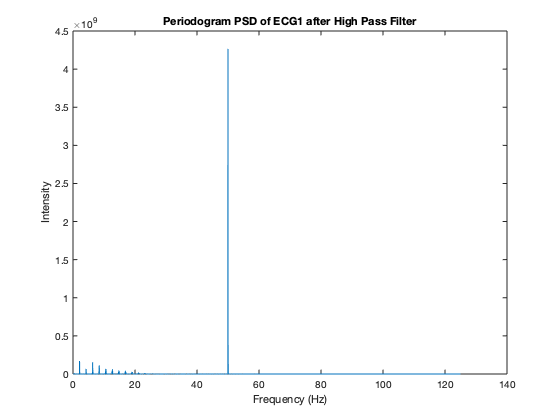 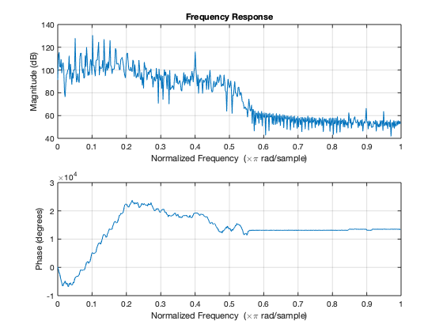
Check the baseline drift
figure(); plot(t(1:4000),ECG1_noisy(1:4000)); hold on plot(t(1:4000),ECG1_low_filtered(1:4000)); title('ECG1 Raw Signal VS High-Pass Filtered Signal'); xlabel('Time (s)'); ylabel('Intensity'); legend('ECG1 Raw Signal','ECG1 High-Pass Filtered'); set(legend,'Location','best'); saveas(gcf,'ECG1_baselineDrift','png'); % The baseline drift and DC offset is partially removed.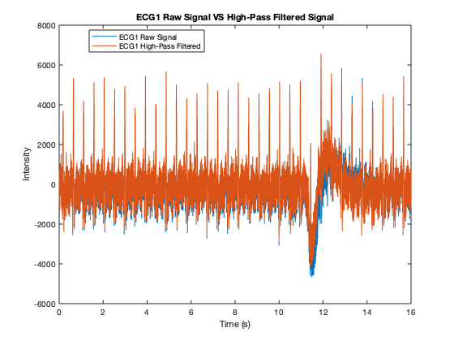
Q6 9th order filter
fc_9 = 35; Wn_9 = fc_9/(Fs/2); [b_9,a_9] = butter(9,Wn_9,'low'); ECG1_high_filtered = filter(b_9,a_9,ECG1_low_filtered); [Pxx,W]=periodogram(ECG1_high_filtered,[],NF); fp=Fs*W/(2*pi); figure(); plot(fp,Pxx,'-'); title('Periodogram PSD of ECG1 after Low Pass Filter'); xlabel('Frequency (Hz)'); ylabel('Intensity'); saveas(gcf,'Periodogram_PSD_ECG1_Low_Pass_Filter','png'); figure(); freqz(ECG1_high_filtered); title('Frequency Response'); saveas(gcf,'Low_Pass_Filtered_frequencyResponse_1','png');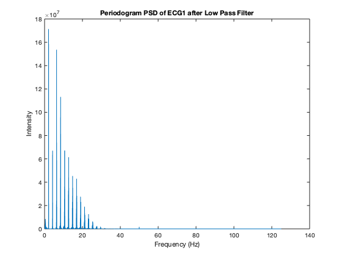 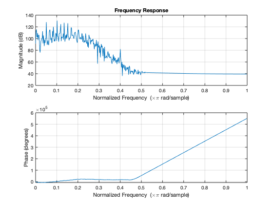
Q7 Notch filter
noise_freq = 50; Wo = noise_freq/(Fs/2); Bw = Wo/35; [b_n,a_n] = iirnotch(Wo,Bw); % fvtool(b,a); % Apply the filter to the signal ECG1_Power_line_filtered = filter(b_n,a_n,ECG1_high_filtered); [Pxx,W]=periodogram(ECG1_Power_line_filtered,[],NF); fp=W*(Fs/2)/(pi); figure(); plot(fp,Pxx,'-'); title('Periodogram PSD of ECG1 after Notch Filter'); xlabel('Frequency (Hz)'); ylabel('Intensity'); saveas(gcf,'ECG1_Power_line_filtered_PSD','png'); figure(); freqz(ECG1_Power_line_filtered); title('Frequency Response'); saveas(gcf,'Nortch_Filtered_frequencyResponse_1','png');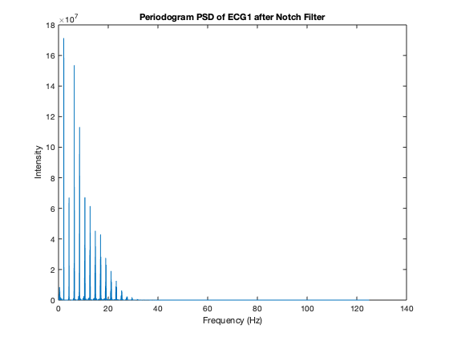 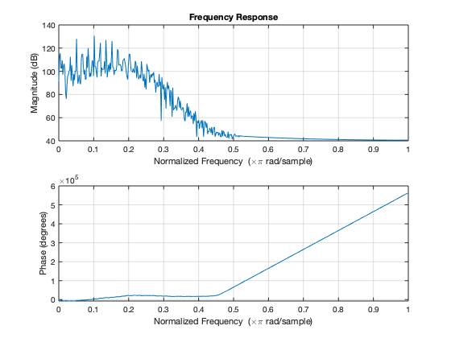
Examine filtered signal
figure(); plot(t(1:500),ECG1_Power_line_filtered(1:500)); title('ECG1 Filtered Signal'); xlabel('Time (s)'); ylabel('Intensity'); saveas(gcf,'ECG1_Filtered_Exmained','png');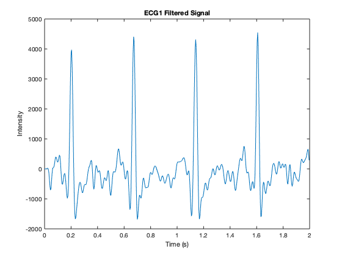
B Identify ECG Components
% Q9 % The number of segments the signal would be split into seg= 10; segment = []; N = length(ECG1_Power_line_filtered); t = N/seg; x0=10; y0=10; width=10000; height=2000; figure() set(gcf,'position',[x0,y0,width,height]) for i = 1:seg segment(i,:) = ECG1_Power_line_filtered((i-1)*t+1 : t*i ); subplot(10,1,i); plot(segment(i,:)); end sgtitle('Filtered ECG1 Segment'); saveas(gcf,'Filtered_ECG1_10-equal_segments','png');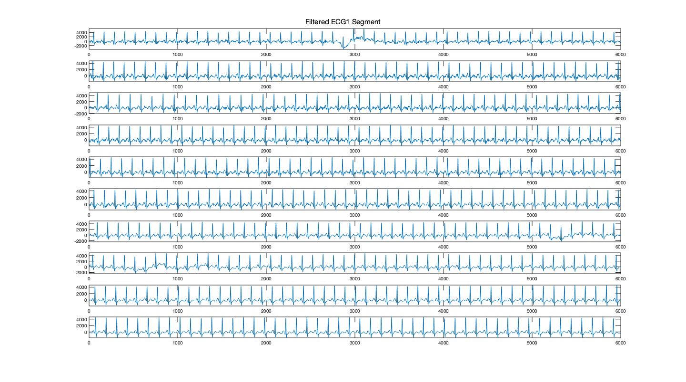
Threshold
T = [1000, 2000, 3000, 4000]; [r,c]=size(segment); % Loop to mark each threshold for i = 1:r figure(); hold on plot(segment(i,:)); for t = 1:length(T) set(gcf,'position',[x0,y0,width,height]); s(t,1:c) = thresh(segment(i,:),T(t))*T(t); plot(s(t,1:c),'x'); plot(T(t)*ones(1,length(segment))); end legend(['EGC1 Segment ',num2str(i)],['Threshold Marker at T= ',num2str(T(1))],['Threshold Line at T= ',num2str(T(1))],['Threshold Marker at T= ',num2str(T(2))],['Threshold Line at T= ',num2str(T(2))],['Threshold Marker at T= ',num2str(T(3))],['Threshold Line at T= ',num2str(T(3))],['Threshold Marker at T= ',num2str(T(4))],['Threshold Line at T= ',num2str(T(4))]); title(['ECG1 Segment ',num2str(i)]); set(legend(),'Location','southeast'); saveas(gcf,sprintf('ECG1_high_filtered_Segment%d_Threshold.png',i)); end % Each Segments with different threshold level for i = 1:r figure(); set(gcf,'position',[x0,y0,width,height]) subplot(5,1,1); plot(segment(i,:)); title(['Filtered ECG1 Segment ',num2str(i)]); for t = 1:length(T) s = thresh(segment(i,:),T(t))*T(t); subplot(5,1,t+1); plot(s,'r'); title(['ECG1 Segment ',num2str(i), ' With Threshold of T= ',num2str(T(t))]); end sgtitle(['ECG1 Segment ',num2str(i),' With Different Threshold']); saveas(gcf,sprintf('ECG1_high_filtered_Segment%d_T%d.png',i,T(t))); end
BPM
Calculate the BPM on Segment 2 using T = 3000
T = 3000; bpm = rate(segment(2,:), Fs, T); disp('Caculated BPM from given formula: '); disp(bpm); % Correction on BPM formula x = segment(2,:); heart_beat = thresh(x,T); % Find the heart beat when the consecutive point is 0 number = 0; for i= 1: length(x) if (heart_beat(i) == 1) && (heart_beat(i+1) == 0) number = number + 1; end end % from the sampling frequency, compute the length of the % segment in minute minute_length = length(x)/(Fs*60); % compute the beats per minute bpmCorrectm = number/minute_length; disp('Caculated BPM from corrected formula: '); disp(bpmCorrectm);
Each segment BPM
T = [1000, 2000, 3000, 4000]; for t = 1: length(T) bpmSum = 0; for a = 1:r x = segment(a,:); heart_beat = thresh(x,T(t)); % Find the heart beat when the consecutive point is 0 number = 0; for i= 1: length(x) if (heart_beat(i) == 1) && (heart_beat(i+1) == 0) number = number + 1; end end % from the sampling frequency, compute the length of the % segment in minute minute_length = length(x)/(Fs*60); % compute the beats per minute bpmCorrectm = number/minute_length; bpmSum = bpmCorrectm + bpmSum; end bpmAvg = bpmSum/10; disp(['Caculated Average BPM of ECG1', 'using T= ',num2str(T(t)),':']); disp(bpmAvg); end
Caculated Average BPM of ECG1using T= 1000: 131 Caculated Average BPM of ECG1using T= 2000: 127 Caculated Average BPM of ECG1using T= 3000: 126.2500 Caculated Average BPM of ECG1using T= 4000: 122